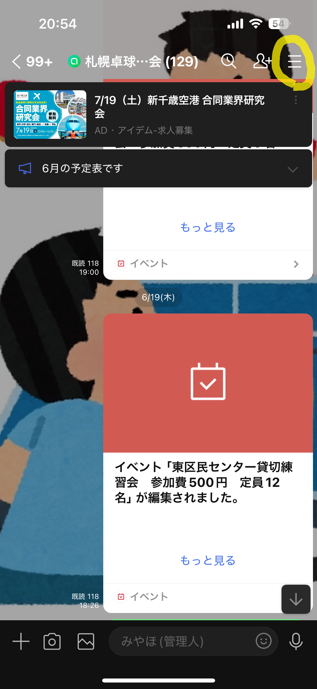
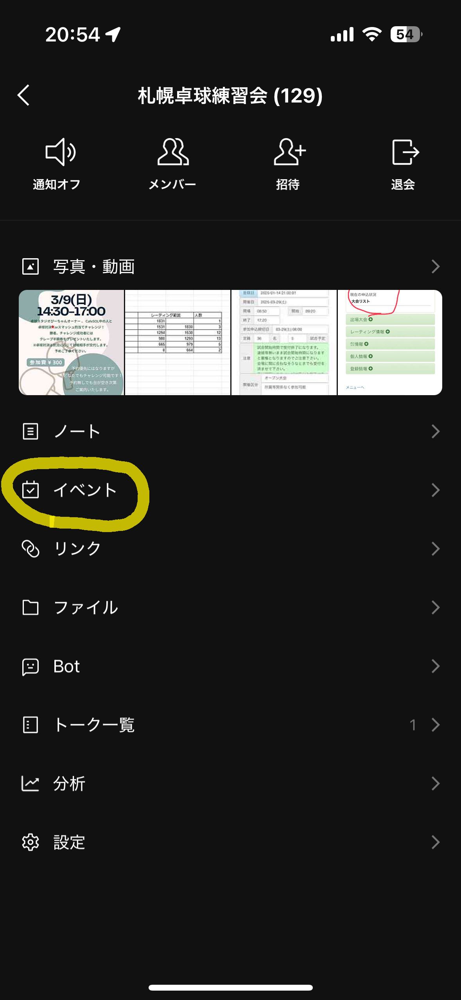
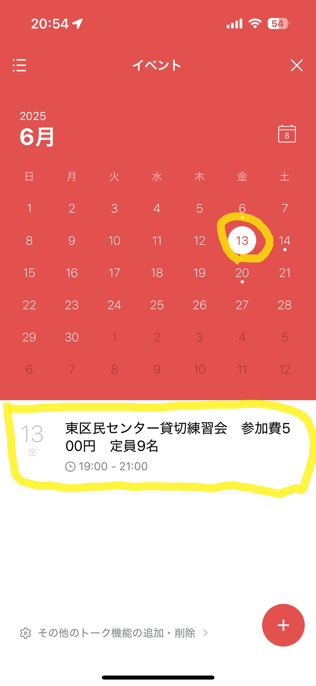
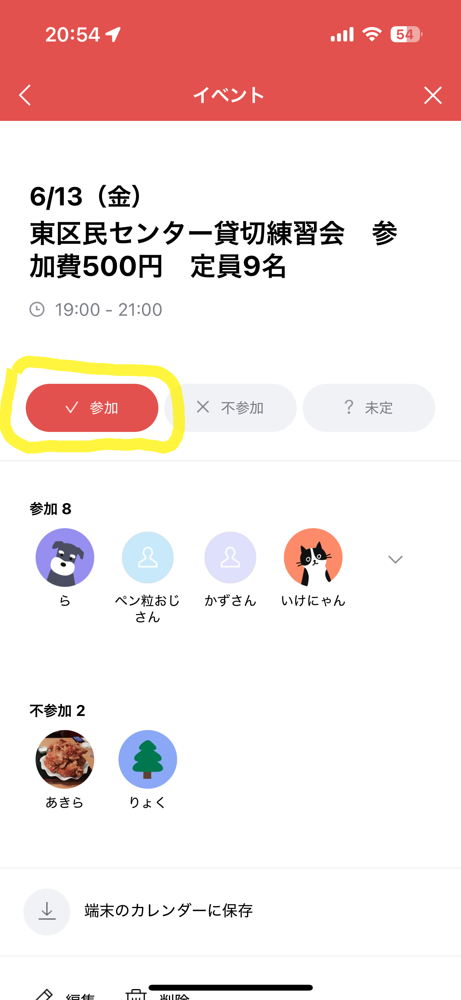
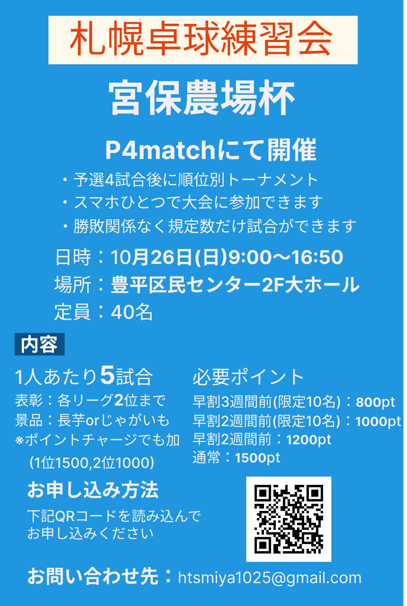
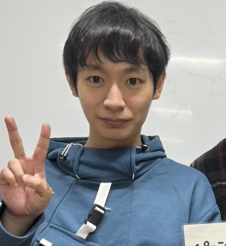

札幌でひとりで気軽に参加できる
卓球練習会・大会
札幌卓球練習会とは・・・
１人だけど卓球を再開したい、もっとたくさん練習したい人むけの練習会です。
平日１回、土日１回を目標に練習会を開催しています。
練習は5分交代で課題練習をします。それを参加者全員と行います。
遅れての参加や途中退室もOKですのでお気軽にご参加ください。
練習会の案内
場所：中央区・東区・豊平区などの区民センター
日時：平日金曜日１９時～２１時・土曜日９時～１２時が多いです
参加費：500円
対象者：ゲーム練習ができるかた（年齢制限はありません）
参加方法：LINEオープンチャット
1. LINEオープンチャットに参加する
下記URL、または下のQRコードの読み込みから参加できます。
https://x.gd/6odiYm
2. オープンチャットの右上にある三本線をタップ

3. イベントをタップ

4. オープンチャットの右上にある三本線をタップ

5. 参加をタップ ※参加するときのみボタンを押してください

大会の案内

申込は下記サイトから！
https://p4match.com/game/game_detail.php?id=10917
主催者紹介

宮保
出身：北海道十勝
年齢：平成７年生まれ 29歳
卓球歴：中学生から初めて途中でブランクが少しあり１５年程
戦型：右ペン粒
よくある質問
一人でも参加できますか？
はい。一人で気軽に参加できる練習会です。5分交代で参加者全員と課題練習を行うので、お一人での参加が基本です。
初心者やブランクがあっても参加できますか？
対象は「ゲーム練習ができる方」で、年齢制限はありません。ブランクから卓球を再開したい方も歓迎です。
いつ・どこで開催していますか？
中央区・東区・豊平区などの区民センターで開催しています。平日は金曜19時〜21時、土曜は9時〜12時が中心です。
参加費はいくらですか？支払い方法は？
参加費は500円です。当日、現金またはPayPayでお支払いいただけます。
持ち物は何が必要ですか？
体育館シューズ、ラケット、参加費500円をお持ちください。
ラケットや用具の貸し出しはありますか？
申し訳ありませんが、貸し出しは行っていません。ご自身のラケットをお持ちください。
遅れて参加したり、途中で退室したりできますか？
できます。遅れての参加や途中退室もOKですので、お気軽にご参加ください。
どうやって参加を申し込めばいいですか？
LINEオープンチャットから参加します。ページ内「練習会の案内」に参加手順を掲載しています。
オープンチャットのURLやQRコードから参加できないときは？
URLやQRコードの有効期限が切れている可能性があります。お手数ですが htsmiya1025@gmail.com までご連絡ください。
大会にはどう申し込みますか？
大会の申込は p4match から行えます。トップページ「大会の案内」の申込リンクをご利用ください。
問い合わせ
お問い合わせは下記メールアドレスまでご連絡ください。
htsmiya1025@gmail.com